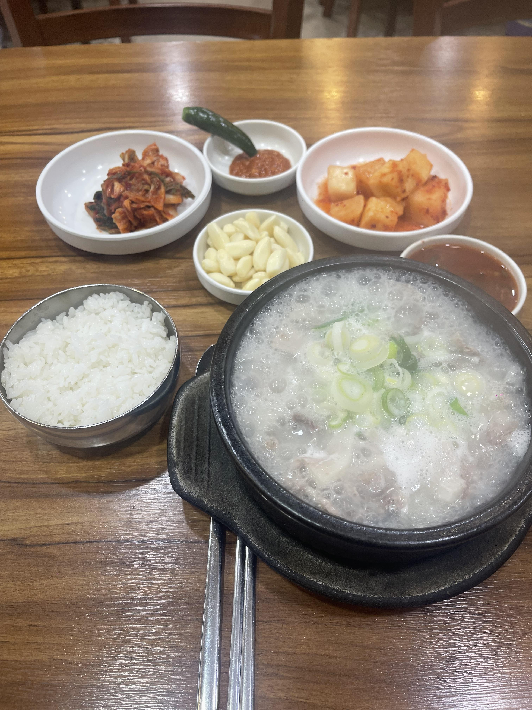
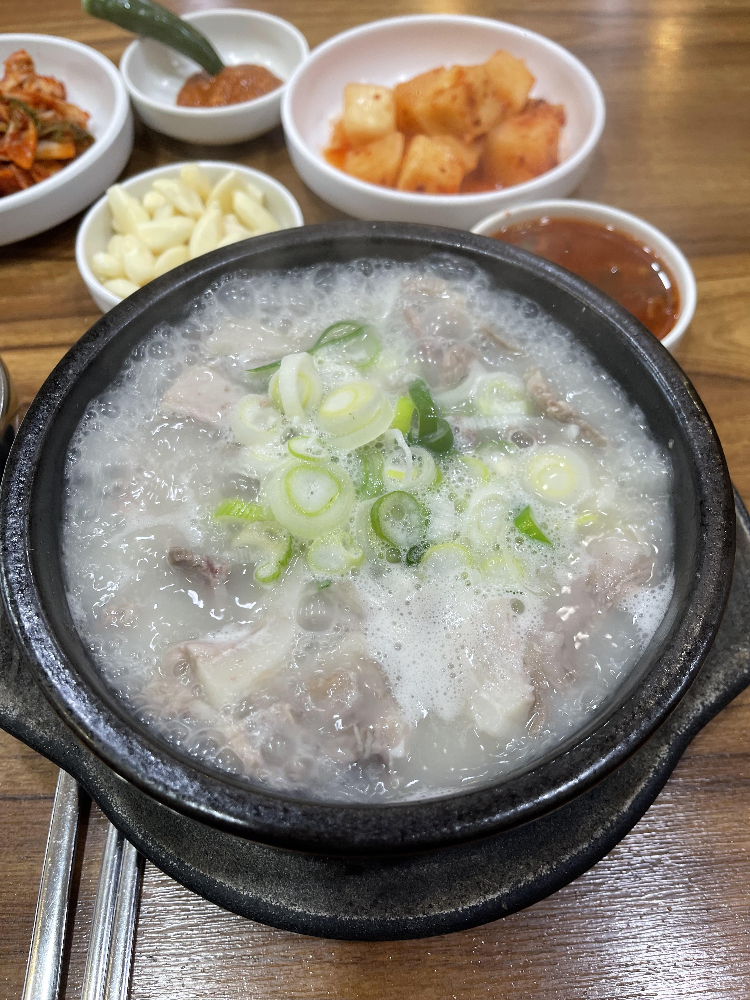
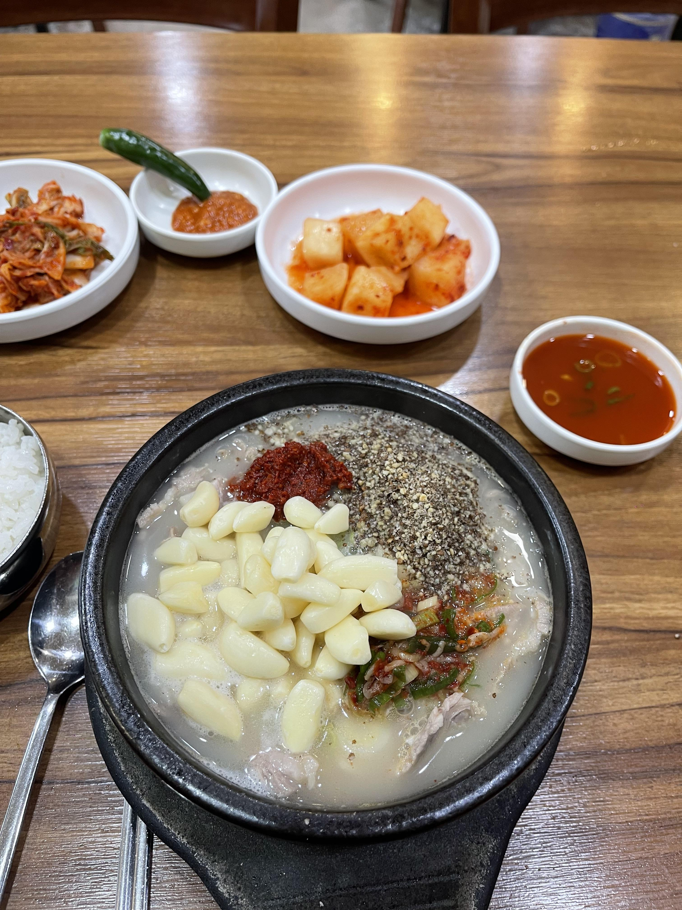
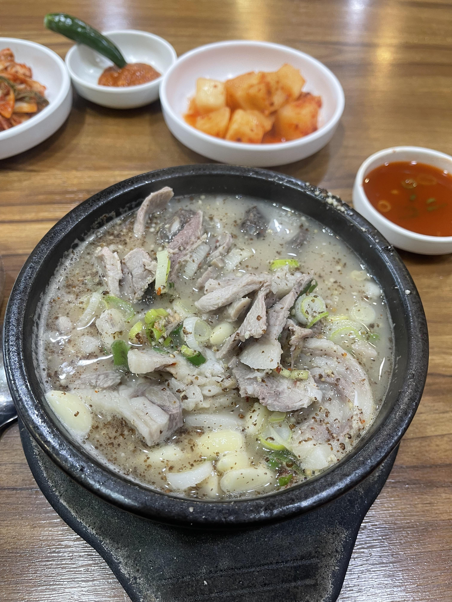

는 순대국이지.
돼지국밥 먹고싶었는데 주변에 잘 하는 곳이 없어 ㅠㅠ




동네 시장 들렀다 간단히 한 그릇
아 이 집 김치가 파란부분 없이 살이 많고 맛있어.
개붕이들도 뜨신거 먹구 가!
는 순대국이지.
돼지국밥 먹고싶었는데 주변에 잘 하는 곳이 없어 ㅠㅠ




동네 시장 들렀다 간단히 한 그릇
아 이 집 김치가 파란부분 없이 살이 많고 맛있어.
개붕이들도 뜨신거 먹구 가!
마늘 말고 국밥을 봐라.
국밥에 마늘을 들이부어놓고 무슨 소리야 ㅋㅋㅋㅋ
아주 맛좋아보이는데뭘
이사람 국밥 먹을줄 모르네
문제있음? 개맛도리아닌감
저기서 마늘을 안 볼 수가 있냐 이거지 ㅋㅋ
난 모든 국밥에 마늘을 저렇게 넣어야 된다고 생각해
ㅋㅋㅋ 사진보면서 혼잣말로 "마늘을 시발ㅋㅋ"
이랫는데 첫댓이 이거내 ㅋㅋ
현직 곰 임?

기어코 니가 오늘 사람이 될려고 하는구나
마늘 쏟으셨는데요?
마늘을 저렇게 먹는 사람은 처음 본다ㅋㅋㅋㅋㅋ
마늘 좋아!
와.. 밤에 자고 일어나서 꼭 환기해라
네 방엔 마늘방구가 가득 차 있을거야
사람 되고싶은거야?
마늘 보고 AI인줄 알았다
뱀파이어 퇴치하냐 뭔...
저점매수추. . . .
마늘숫자합격
뭐냐 생마늘 저렇게 뜨거울때 넣으면 괜찮음? 씨발 왜 이 생각을 못했지 담에 해본다
펄펄 끓을 때 통마늘 넣어주면 감자 같아지고 맛도 좋아.
얼래 편마늘이 젤 좋은데 아쉬운대로 먹는거지 뭐.
오케 통마늘 주는곳 편마늘 주는곳 다 가서 해본닷
웅녀가 개드립하네
침나오네 얼마임?
마늘이 아주 탐스럽게많이들어가서 좋네
특 11,000원.
고기양이 아주좋네....좋은밤보내
마늘을 저렇게도 먹을수 있구나.. 나름 나도 생마늘 귀신인데 이야 ..
생마늘은 위 아려. 푹 익혀 머거
그아린맛으로 먹는건데 익히면 익힌데로지만 입냄새빼곤 좋음. 나름 위튼튼
유럽 저메추 ㄱㅅ
다데기, 마늘이랑 또 뭐 넣은 거임?
새우젓에 파가 들어가?
흰 새우젓 말고 빨간 새우젓 보면 파 들어가지.
국물은 최대한 빼서 새우로만 넣어.
새우젓 국물 최대한 짜서 새우 많이 넣는거..
너 먹을 줄 아는구나
나는 순대를 별로 안좋아해서 그냥 순대국밥시키고 순대 빼달라함 ㅋㅋ 근데 저기는 맛있어 보이네
먹어보고싶다
여기 어디임?
통마늘주는곳이 없어서 편마늘주는곳은 나도 저렇게 먹음
진짜 편마늘 집에서 한가득 썬거 가지구 댕기고 싶어. 허락만 하문.
아 오늘은 퇴근하고 국밥 먹으러 가야겠다
그럼 점심 메뉴는 안국밥스러운거 + 퇴근 3시간 전엔 물도 애껴 마셔.
감기 때문에 고생좀 해서 지금 일어나 있는데... 새벽에 마늘이랑 뜨끈한거 끌리게 만드네..
중국산 배추는 파란부분이 없다
마늘 개섹스하네 ㅋㅋㅋㅋ
전생에 곰이었나 뭔 마늘을 ㄷㄷ
삼겹살에 통마늘 넣듯 펄펄 끓일 때 넣으면 맛있엉
국밥에 통마늘 첨봐서 생소하긴 하네
아 마늘 뭐야
통마늘을...시발..ㅋㅋㅋ